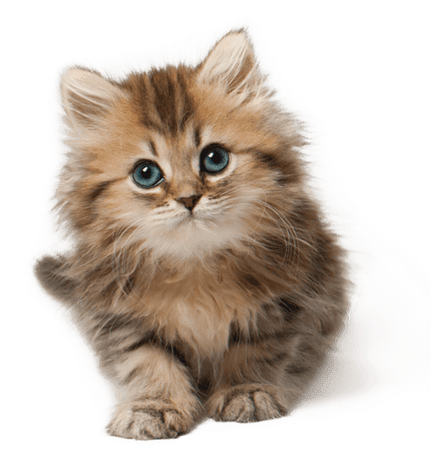

Kot domowy to jedno z najpopularniejszych zwierząt domowych na świecie, znane ze swojej niezależności i ciekawskiej natury. Koty zostały udomowione około 9–10 tysięcy lat temu i od tamtej pory towarzyszą ludziom, pomagając m.in. w zwalczaniu gryzoni. Ich ciała są niezwykle elastyczne, a dzięki specjalnej budowie kręgosłupa potrafią wykonywać zwinne skoki i lądować na łapach.
Koty większość dnia spędzają śpiąć–nawet do 16 godzin – co wynika z ich instynktu drapieżnika, który wymaga oszczędzania energii na polowanie. Mają bardzo czuły słuch i wzrok przystosowany do widzenia w słabym świetle. Ich wąsy, czyli wibrysy, pomagają im oceniać przestrzeń i poruszać się nawet w całkowitej ciemności.
Ciekawostką jest, że koty potrafią wydawać ponad 100 różnych dźwięków i używają ich do komunikacji z innymi kotami oraz ludźmi. Mruczenie, które często kojarzy się z zadowoleniem, może też pełnić funkcję uspokajającą i leczniczą. Dodatkowo każdy koci nos ma unikalny wzór, podobnie jak linie papilarne u człowieka, co czyni każdego kota wyjątkowym.Ale najważniejsze jest to, że koty są świetnymi towarzyszami – potrafią być czułe, uspokajające i bardzo przywiązane do swoich właścicieli, nawet jeśli nie zawsze to pokazują w oczywisty sposób.
Autor strony internetowej: Maksym Danylyshyn